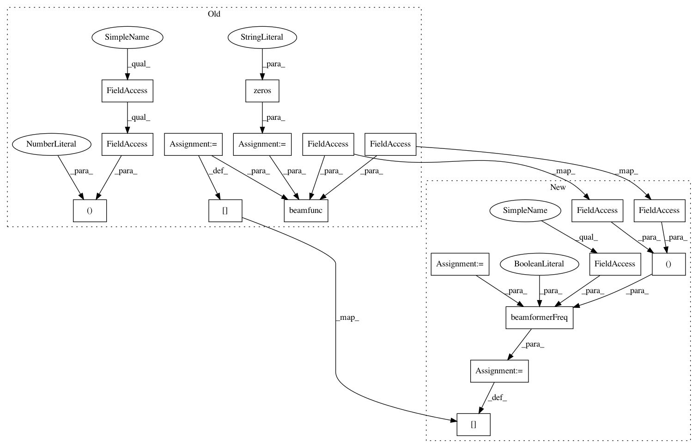

30f4a3e03dc59daed7979659701e4c537fbae91c,acoular/fbeamform.py,BeamformerFunctional,calc,#BeamformerFunctional#Any#Any#,379
Before Change
// prepare calculation
kj = 2j*pi*self.freq_data.fftfreq()/self.c
numchannels = int(self.freq_data.numchannels)
e = zeros((numchannels), "D")
h = empty((1, self.grid.size), "d")
// function
beamfunc = self.get_beamfunc("_os")
if self.r_diag:
adiv = sqrt(1.0/(numchannels*numchannels-numchannels))
scalefunc = lambda h : adiv*(multiply(adiv*h, (sign(h)+1-1e-35)/2))**self.gamma
else:
adiv = 1.0/(numchannels)
scalefunc = lambda h : adiv*(adiv*h)**self.gamma
for i in self.freq_data.indices:
if not fr[i]:
eva = array(self.freq_data.eva[i][newaxis], dtype="float64")**(1.0/self.gamma)
eve = array(self.freq_data.eve[i][newaxis], dtype="complex128")
kji = kj[i, newaxis]
beamfunc(e, h, self.r0, self.rm, kji, eva, eve, 0, numchannels)
ac[i] = scalefunc(h)
fr[i] = True
class BeamformerCapon( BeamformerBase ):
After Change
eva = array(self.freq_data.eva[i][newaxis], dtype="float64") ** (1.0 / self.gamma)
eve = array(self.freq_data.eve[i][newaxis], dtype="complex128")
kji = kj[i, newaxis]
beamformerOutput = beamformerFreq(True, steerVecFormulation, self.r_diag, normFactor * nMics**2, (self.r0, self.rm, kji, eva, eve)) // takes all EigVal into account
if self.r_diag: // set (unphysical) negative output values to 0
indNegSign = sign(beamformerOutput) < 0
beamformerOutput[indNegSign] = 0.0
ac[i] = (beamformerOutput ** self.gamma) * normFactor
fr[i] = True
class BeamformerCapon( BeamformerBase ):
In pattern: SUPERPATTERN
Frequency: 3
Non-data size: 18
Instances
Project Name: acoular/acoular
Commit Name: 30f4a3e03dc59daed7979659701e4c537fbae91c
Time: 2017-10-07
Author: tom.j.gensch@campus.tu-berlin.de
File Name: acoular/fbeamform.py
Class Name: BeamformerFunctional
Method Name: calc
Project Name: acoular/acoular
Commit Name: 212be41d28a7d40ce63d3ad1c5d3c453a83a1f1c
Time: 2017-10-07
Author: tom.j.gensch@campus.tu-berlin.de
File Name: acoular/fbeamform.py
Class Name: BeamformerEig
Method Name: calc
Project Name: acoular/acoular
Commit Name: 5ba45816fca53995a115e168cd40e739b55be7cc
Time: 2017-10-07
Author: tom.j.gensch@campus.tu-berlin.de
File Name: acoular/fbeamform.py
Class Name: BeamformerMusic
Method Name: calc